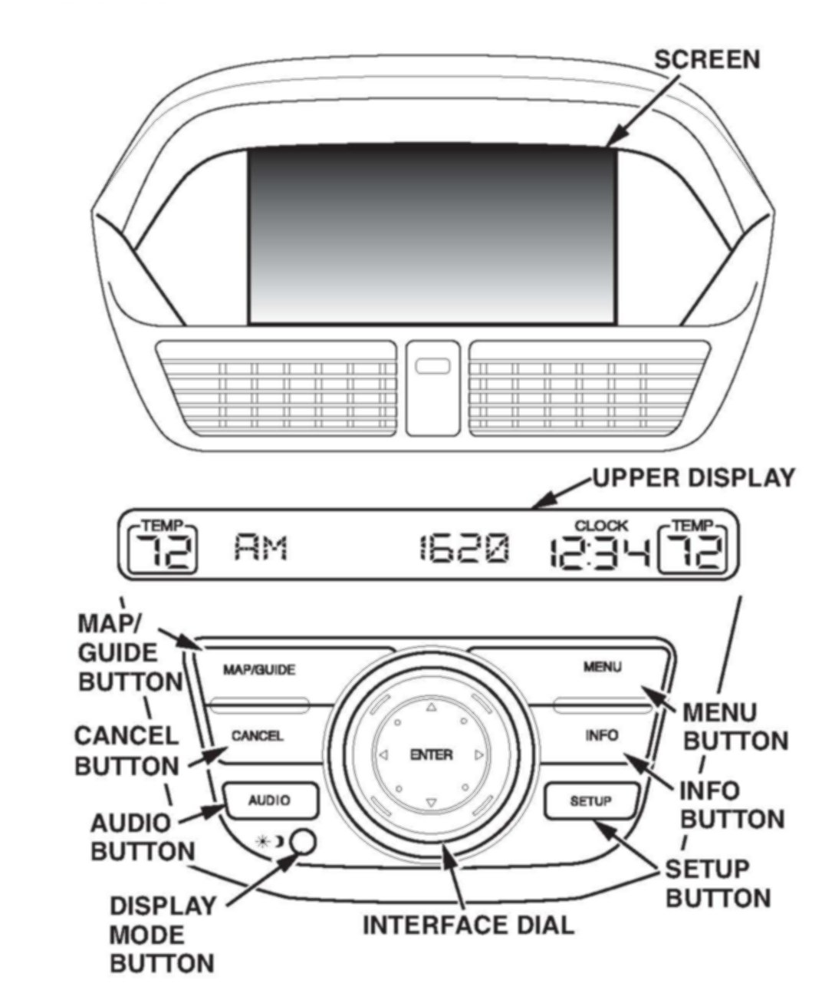
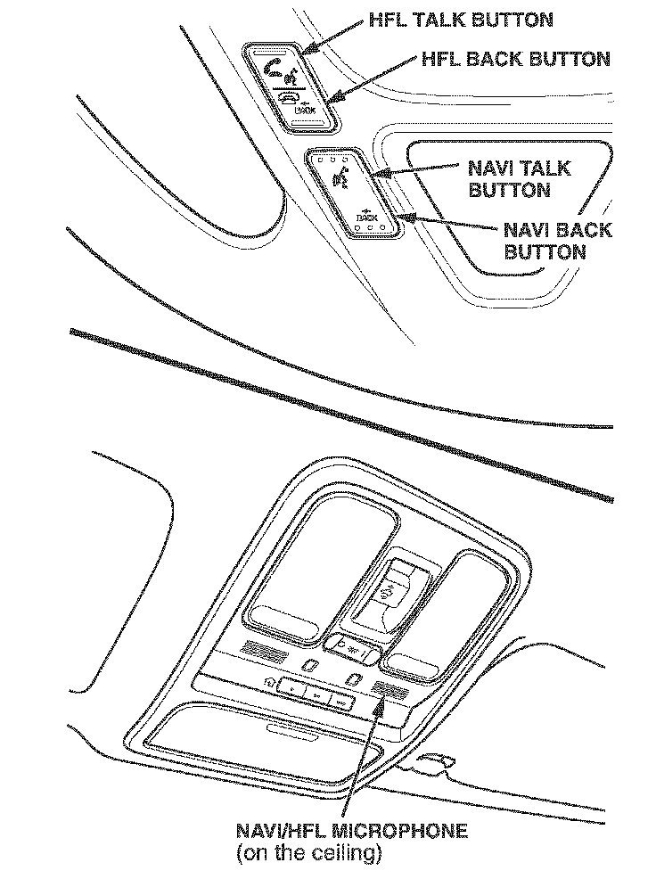
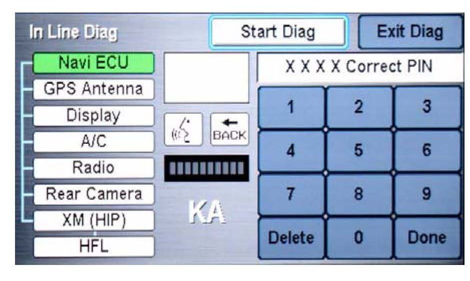
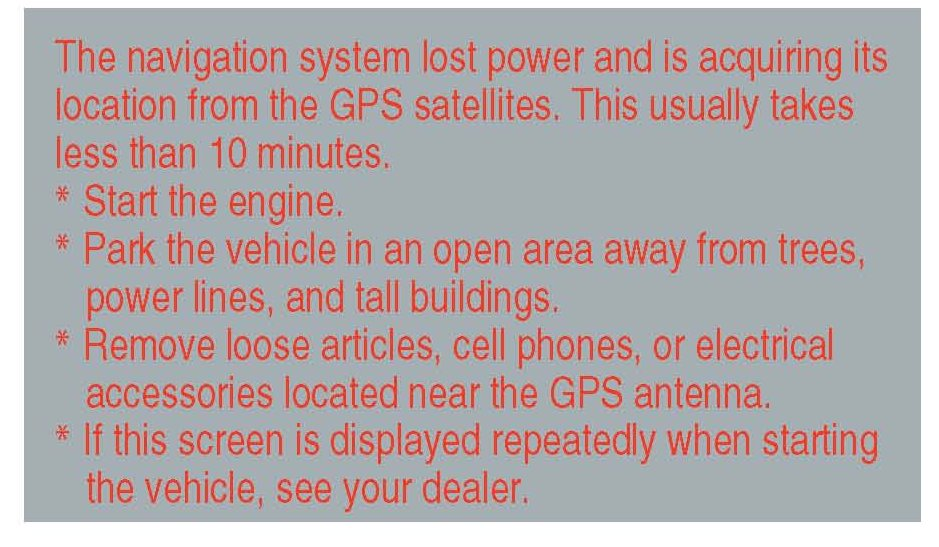
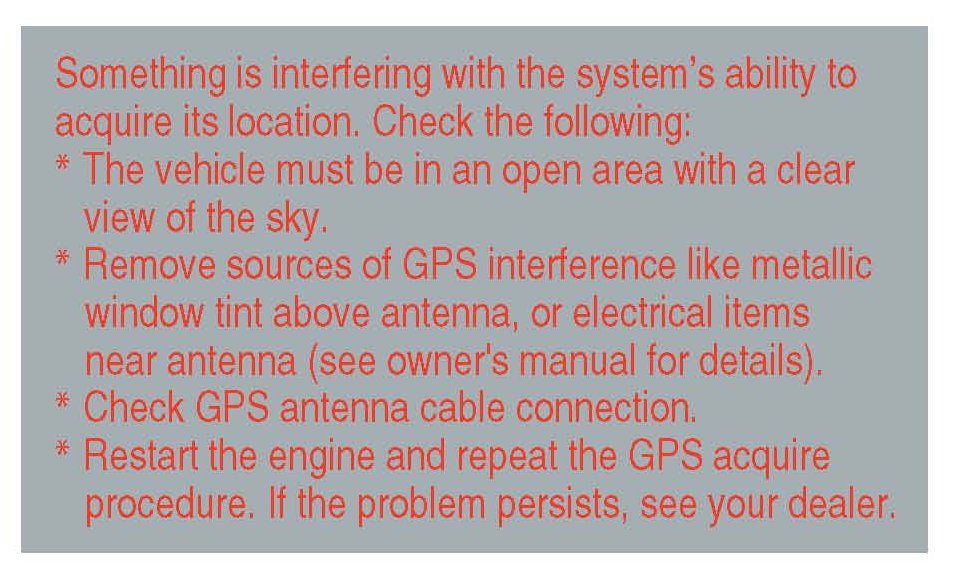
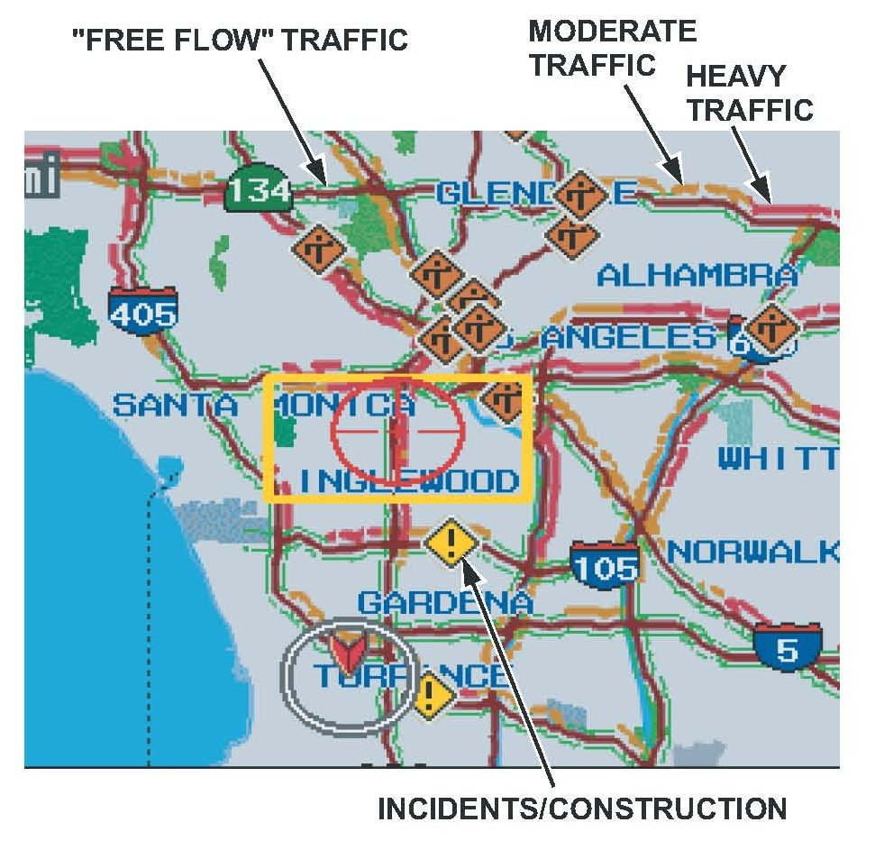
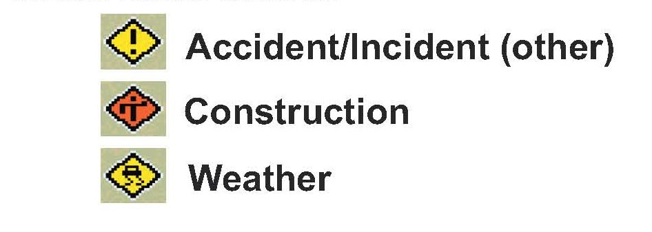

Navigation System - Set-Up/Operation/Testing
06-038July 4, 2008
Applies To:
2007-09 MDX - ALL
2007-09 MDX: TQI of the DVD Navigation System
(Supersedes 06-038, dated April 24, 2008, to update the information marked by asterisks)
BACKGROUND
This bulletin provides information for the TQI of the DVD navigation system, including testing. These topics are covered:
^ Navigation System Controls
^ Voice Control System
^ Navigation System Setup at the TQI
^ Map Coverage Areas
^ Hawaii System Setup
^ AcuraLink Real-Time Traffic Information
^ Ordering a DVD
For more detailed information on system operation, refer to the navigation system manual.
WARRANTY CLAIM INFORMATION
None. These procedures are considered part of the normal TQI.

NAVIGATION SYSTEM CONTROLS
Screen - All selections and instructions are displayed on the screen. This is not a touch-screen display. Information cannot be entered into the system by touching the images or icons with your finger. To communicate with the system, use the voice control system or the interface dial. If the vehicle has a rearview camera, the rear view is shown on the navigation system screen whenever you shift to R. Use a soft cloth and a mild cleaner intended for eyeglasses or computer screens to clean the screen.
Upper Display - Shows the radio information, the climate control information, and the time. MENU button - Press this button to change the display from the current screen to the Enter destination by screen. When en route to a destination, press this button to change to the Change route by screen.
MAP/GUIDE button - Press this button to display a map of your current position for driving. When en route, press this button to switch between the map and the guidance or direction list screen.
INFO button - Press this button to display the menu for selecting Message, Voice Command Help, Trip Computer, Map Legend, Calendar, Calculator, Key to Zagat ratings, Roadside Assistance, and Cellular Phonebook.
NOTE:
To access the Cellular Phonebook from the above menu, a cell phone must be paired to the HFL system. If the client does not pair a cell phone to the HFL system, Cellular Phonebook appears as a gray box within the menu and is not accessible.
AUDIO button - Press this button to display the audio screen.
DISPLAY MODE button - Switches the display between Day mode, Night mode, and OFF.
CANCEL button - Press this button to return to the previous screen.
SETUP - Displays the setup screens to change and update information in the system.
DIAL/ENTER button - The interface dial moves left, right, up and down. It also rotates.
^ Move the dial up and down to scroll through a displayed list, a page at a time.
^ Rotate the dial to move highlighting from one item to another in a list.
^ Push in on the DIAL/ENTER button to select an item in a list once it is highlighted.
^ When a map is displayed, rotate the dial to change the map scale. Rotating it clockwise reduces the scale, showing less area with greater detail. Rotating it counterclockwise increases the scale, showing more area with less detail.
VOICE CONTROL SYSTEM

Voice recognition is controlled by the NAVI TALK and NAVI BACK buttons. This is intended as the primary way to give commands to the system. Using the buttons and interface dial allows the passenger to operate the system and should be considered a secondary method for the driver.
NAVI TALK - Press and release this button to activate the voice control system. After pressing and then releasing the NAVI TALK button, wait for the beep, and then speak the command.
NAVI BACK - This does the same function as the CANCEL button. Press this button to return to the previous display. After the previous display appears, the system prompts you for a command and then beeps. Press and release the NAVI TALK button to give the desired command.
Microphone - Receives voice commands.
The navigation system communicates through the audio speakers. When the navigation system is giving guidance instructions, it is through the front speakers. When you are using the voice control system to give commands (by pressing the NAVI TALK or NAVI BACK buttons), the front and rear speakers are muted.
The voice command list can be viewed or heard by pressing the INFO button and selecting Voice Command Help. A tutorial is included that explains the operation of the voice control system. Refer to the quick start guide and the navigation system manual for detailed information.
Improving Recognition
To help the system understand your voice commands, follow these guidelines:
^ Adjust the airflow from the center and side vents so that it does not blow against the microphone on the ceiling. Place your hand near the microphone and, if you feel any breeze, adjust the vents.
^ Close the windows and the moonroof.
^ Set the fan speed to low (1 or 2).
^ After pressing the NAVI TALK button, wait for the beep, and then give a voice command.
^ Give a voice command clearly, in a natural speaking voice, without pausing between words.
^ Make sure the correct screen is displayed for the voice command you are giving (refer to the navigation system manual).
NOTE:
^ If the system cannot recognize your voice command, speak louder.
^ If the microphone picks up voices other than yours, the system may misinterpret your voice commands.
^ If you speak a command with something in your mouth, or with a heavy accent, the system may misinterpret your voice commands.
NAVIGATION SYSTEM SETUP AT THE TQI
The navigation system is basically ready to use when the vehicle is delivered to the dealership. Since the system interfaces with other systems in the vehicle, it is important to ensure that all of the systems are initialized so they will work properly for the client. To initialize the system, follow this procedure:
1. Do the normal TQI of the vehicle, including the audio system. The navigation system voice will not function until you enter the 5-digit anti-theft code for the audio system.
2. Verify that the XM(R) Satellite Radio dealer demo account has been set up by tuning to XM stations 000, 001, 007, 009, 047, 122, 174, and 247. If these stations can be received, the demo account is fully active.
NOTE:
For 2007-09 MDXs, XM Satellite Radio and real-time traffic are free for the first 3 months. After 3 months, clients must subscribe to XM radio and/or real-time traffic to continue receiving coverage by calling 800-852-9696, or going online to www.xmradio.com. They will need their XM radio ID (displayed when you tune to channel 0) and a credit card.
3. Verify that the MID (multi-information display) shows Welcome DRIVER 1 or Welcome DRIVER 2 when you first get into the vehicle and turn the ignition switch to ON (II).
NOTE:
If the MID shows only Welcome when you turn the ignition to ON (II), the remotes are not linked with the vehicle and any changes made to the setup settings will not be saved.
You must link the remotes before proceeding.
Refer to the Body Electrical section of the 07-09 MDX Service Manual or, online, enter keywords KEYLESS DESC, and select Keyless/Power Door Locks/Security System Description from the list.

4. You could possibly see the factory In Line Diagnosis screen below. If you see the screen, do this:
^ Press and hold the MENU, MAP/GUIDE, and CANCEL buttons at the same time until the Select diagnosis menu screen comes up. Then release the buttons.
^ Press and hold the MAP/GUIDE button for at least 15 seconds.
^ Select Complete on the display, then select Return twice to exit the diagnostic mode.
5. Start the engine, and move the vehicle outside, away from buildings and power lines. Next, enter the 4-digit security code for the navigation system. The code is on the Navigation Anti-Theft Code card.
NOTE:
^ If the anti-theft code card is lost, you can find the code on the iN (Interactive Network) by using the anti-theft code option and the serial number. To get the serial number, go to the Navi ECU Diagnostic screen (see the navigation system diagnostic mode in the service manual), or look on the underside of the navigation unit under the driver's seat.
^ If you cannot find the code on the iN, contact American Honda's Warranty Department.
^ If the anti-theft code does not work, try entering 0000 (four zeros) as the code. If the system accepts this, replace the navigation control unit.

6. The following instructions appear on the screen to indicate the system is initializing (determining its location from the GPS satellites). Follow the on- screen instructions.
NOTE:
The average initialization takes about 10 minutes, but it can take as long as 45 minutes.

7. If the system does not initialize within 10 minutes, the screen below appears. The system is still initializing but will not automatically exit when the initialization is complete. Do not immediately follow the instructions on the screen. After 30 minutes, try restarting the vehicle to see if the navigation system completed the initialization. If it did not, follow the instructions on the screen.
NOTE:
The initialization screen may appear after battery voltage to the navigation control unit has been disconnected for more than 5 minutes. If this happens, follow the on-screen instructions. If you are still unable to obtain GPS initialization, refer to the service manual for diagnostic information.
8. When initialization is complete, the disclaimer screen appears. Select OK.
NOTE:
Do not enter a destination yet. For the navigation system to calculate a route, it must align the current location to a mapped road (map matching). This happens when you start driving.
9. Drive the vehicle at least a half-mile from your dealership, and find a safe place to park. Then set the map scale to 1/20 by turning the interface dial clockwise.
^ Make sure the VP (vehicle position) icon moves smoothly as you drive and does not jerk from one point to another. Also make sure the icon points in the direction the vehicle is traveling; it does not "dog track" or spin.
^ Make sure the VP icon smoothly follows the vehicle's maneuvers as you make turns.
^ After driving a few hundred feet on a road that is displayed on the map, the name of the road you are driving on should appear across the bottom of the screen.
NOTE:
Refer to the service manual symptom troubleshooting section if the navigation system fails to map-match after driving the vehicle for more than a couple of miles on a displayed road.
10. With the map screen displayed, press and release the NAVI TALK button.
11. When you hear the beep, say "Find the nearest Acura dealer." The system should display a list of Acura dealers.
12. Turn the interface dial to highlight your dealership, then push in on the DIAL/ENTER button.
13. On the Calculate Route to screen, select OK.
14. The system then calculates a route and displays it as a blue line. If you are in a rural area with unverified roads, you may see a blue vector line pointing in the direction of your destination or a blue/pink dotted line.
15. Follow the voice guidance back to your dealership. The voice guidance should work even with the audio system turned off.
16. With the map screen displayed, check the system interaction with the audio system and the upper display. Press and release the NAVI TALK button. After the beep, say "XM channel 125." The upper display should change to XM channel 125 and show the Weather Channel.
17. With the map screen displayed, check the system interaction with the climate control system. Turn on the climate control system by selecting AUTO. Then press and release the NAVI TALK button. After the beep, say Temperature 68 degrees." The upper display should change to 68 degrees.
18. The time shown in the upper display should be correct; the system gets it from the GPS satellites. For areas that do not follow daylight saving time, you may have to adjust the time settings. Go to Clock Adjustment in the Setup screen, and set Auto Daylight to ON.
NOTE:
If your dealership is located near a time zone boundary, set Auto Time Zone by GPS to OFF. The clock then keeps the "home" time if the client routinely drives across the time zone boundary.
19. If your dealership is located in a metropolitan area that has traffic incident or traffic flow data available (see ACURALINK REAL-TIME TRAFFIC INFORMATION), do this:
^ Select one of the traffic map scales (1/2, 1, 2, or 5 mile scales) by rotating the dial.
^ Use the interface dial to scroll to the downtown area of your city. Freeways and other main roads should show traffic flow data as red, orange, or green lines for traffic flow in one or both directions on the road.
^ Small diamond-shaped "traffic incident" icons may be shown. If so, scroll over an icon and press in the interface DIAL/ENTER button to see the details.
^ Partially displayed traffic data does not indicate a problem with the navigation system. Traffic flow and density varies from day to day and from one road to another. If your area has traffic, but it is not displaying on the screen, refer to the Navigation section of the service manual for more information.
20. Press the SETUP button, or use the voice control system and say "Setup." Then verity these settings:
^ Volume is set to midrange.
^ Brightness is set so the display can be seen in bright sunlight.
21. In the setup mode, select More, then Personal Information, then Previous Destinations. Follow the screen prompts to delete all previous destinations except your dealership.
MAP COVERAGE AREAS
The map database covers the 48 contiguous United States, and parts of southern Canada. The map coverage for the U.S. contains accurately mapped (verified) metropolitan areas and less accurate (unverified) rural coverage. In Canada, the database covers major metropolitan areas and major roads connecting those metropolitan areas. Coverage extends to about 100 miles from the U.S. border. A gray DVD that provides coverage for northern Canada is also available for purchase (see ORDERING A DVD).
Map Types
The maps on the screen have verified roads and unverified roads.
Verified roads have been driven by the database vendor. Information about the road's average speed, turn restrictions, or whether it is a one-way street are contained in the navigation system. Roads within metropolitan areas (detailed coverage), interstate freeways, and major roads connecting cities are typically verified. They can be recognized on the screen (daytime setting) as the darker colored roads.
Unverified roads may be found in rural areas. Because information about these roads may have inaccuracies, they are shown for reference only. They are seen on the screen (daytime setting) as a light brown color.
Guidance in unverified areas depends on the setting for unverified routing made during setup. If the setting is OFF, you will see a dotted blue vector line pointing to your destination when driving in an unverified area. You will have to manually choose roads from the map to get to your destination. If the setting is ON, then you will see a blue/pink route line and receive route guidance. Pop-up cautionary boxes appear while on the route to alert you when entering unverified areas.
NOTE:
The unverified routing feature is set to OFF from the factory.
Detailed Coverage
Many cities and metropolitan areas are fully mapped.
Detailed map coverage includes:
^ Roads with names
^ Service roads without names that serve as access to rest areas along motorways
^ Main paved roads without names that are within or lead to included points of interest (places such as large shopping centers, universities, golf courses, parks, etc.)
^ Paved roads without names that are used only by public vehicles
^ Ferry connections for automobiles via rail or boat
^ Walkways with names and addresses
^ Undefined traffic areas with more than 10,800 square feet
^ Ramps, roundabouts, special traffic figures, turn lanes, and U-turn lanes
^ Service roads
^ Pedestrian streets and pedestrian zones
For a list of current detailed coverage areas by state/province, refer to the navigation system manual for the current model year or www.acuranavi.com. Select the View Current Coverage Map link, use the pull-down menu to select the vehicle Year and Model, then select View Coverage.
Non-Detailed Coverage
Cities and towns in the non-detailed map coverage area may have incomplete mapping. Only major federal, state, and county roads leading to and through these cities and towns are mapped. These verified roads are shown in black. All other streets are unverified, and are shown in light brown. If you see an asterisk (*) next to the city name:
^ Streets may be missing completely, or shown in the wrong location.
^ Street address information may be unavailable, and you may be prompted to use the map to locate your destination.
^ Streets may be named incorrectly, or have no name (unnamed road).
Guidance in unverified areas depends on the setting for Unverified routing made during setup. See ~Driving to Your Destination" in the navigation system manual for more information.
HAWAII SYSTEM SETUP
The white navigation DVD contains maps for the 48 contiguous states, parts of southern Canada, and Hawaii. If the vehicle is sold in Hawaii or relocated from the mainland to Hawaii, you must change the map coverage so the applicable maps are displayed.
1. Press and hold the MENU, MAP/GUIDE, and CANCEL buttons at the same time. The display changes to the main diagnostic menu.
2. Select Coverage area. Then select Hawaii coverage. The system may reboot.
3. Start the vehicle, and move it to an open area so the system can acquire a GPS signal.
4. After the system has initialized, do the map matching by driving the vehicle on a road until the road name appears at the bottom of the map screen.
NOTE:
^ If a vehicle is relocated from Hawaii to the mainland, you must change the Coverage area to US.
^ When you change the coverage area, any previous destinations, address book, and other system settings are changed to the factory defaults.
^ XM Satellite Radio is not available in Hawaii, so there is no AcuraLink or real-time traffic coverage.
ACURALINK REAL-TIME TRAFFIC INFORMATION
Current traffic information can be displayed by the system in many metropolitan areas. Information is displayed as traffic flow bands of different colors on selected roads, or as diamond-shaped icons.

The amount of traffic coverage varies from city to city. The Acura website provides a page with an up-to-date list of the current cities with traffic coverage, and the actual roads covered within each city. The site also provides a demonstration of the system that explains the meaning of traffic flow color bands and incident icons displayed on the map.
The traffic page can be found by clicking the "mini site" link at

Color bands indicate how fast the traffic is moving:

Incident icons indicate accidents, construction, or weather-related incidents:
ORDERING A DVD
Replacement DVDs can be ordered online at the website.Select Order Navigation DVD. You can also call the Acura Disc Fulfillment Center. Both methods require a credit card. The DVD for this model has a white label and cannot be ordered through the parts system. The following DVDs will not work in this navigation system:
^ Earlier model navigation DVDs (black label)
^ Map software programs manufactured by other companies
^ DVD movies or DVDs containing audio recordings Updated DVDs are usually available for purchase in the fall of each year. They may contain the following:
^ Enhanced maps and points of interest (P01) coverage
^ Fixes for minor software bugs
^ Additional features
NOTE:
^ Map matching must be done any time the DVD is removed or replaced. This consists of driving on a mapped road until the road name shows up at the bottom of the map screen.
^ Always order navigation DVDs on an as-needed basis. During a typical model year, each color DVD may undergo half a dozen "software only" version upgrades to fix minor issues on some or all models the DVD supports. This is normal. Usually, only the letter at the end of the version number changes, while the database (maps and P0Is) remains unchanged.
^ Never promise clients future free updates. There are no free programs for updating the navigation DVD. The online DVD order site provides information when an update for a particular DVD is available.
^ Damaged discs are not covered by warranty unless the disc is damaged by the navigation unit.

Disclaimer